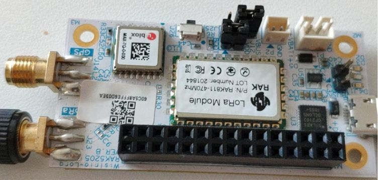
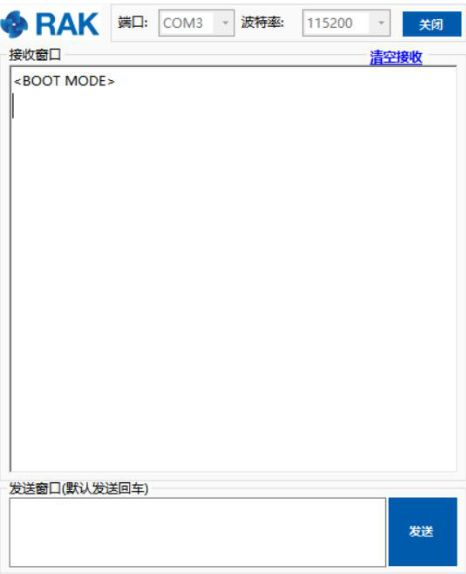

Device Firmware Setup
1.Download the latest bootloader here in order to avoid potential problems.
Note: Skip this section if you have a RAK5205 V3.0.0.0 firmware or newer, for it has already a bootloader.
2.To start with the bootloader burning, download and install the STM32CubeProgrammer tool here.
3.Then, configure your RAK5205 by jumping the “BOOT” pin and “VCC” pin for boot mode as the following pictures shown below:


4.Connect your RAK5205 to your PC using the USB cable as follow:

5.Choose the correct port number in the COM Port field. You can check this in the Device Manager. You can also check this document to learn on how to interface your RAK5205 with your computer properly.

6.Open the “STM32CubeProgrammer” tool.
7.Select UART type; go to COM Port and look for your RAK5205 Breakout Board COM Port (ex. COM5).
8.Configure the Baud rate and Parity.

9.Then, press the “Connect” button at the top right corner.
Warning:If there are some errors in the Log box or it can’t connect, please close the STM32CubeProgrammer and reset RAK5205, then open the STM32CubeProgrammer and connect again.
- The correct Log you should see is the information like the following picture shows:

Now, let’s start burning the bootloader into the RAK5205 WisTrio LoRa® Tracker.
10.First, erase all data on the RAK5205 WisTrio LoRa® Tracker referred from the following picture below:

11.Press “Open file” and select the bootloader file in the pop-up window as follows:

12.Click the “Download” button to start the burning process.

13.OK, you have successfully burned the firmware into RAK5205 WisTrio LoRa® Tracker! You should see the same notification as shown in the image below:

14.”Disconnect” and close the “STM32CubeProgrammer” tool. Then, power down and remove the connection between BOOT pin and VCC pin to let RAK5205 WisTrio LoRa® Tracker work in normal mode.

15.Then, connect RAK5205 with your PC’s USB interface again.
- If you have opened the serial port tool, you can see some content like this:

Alright! You can now start burning the firmware into RAK5205 WisTrio LoRa® Tracker.